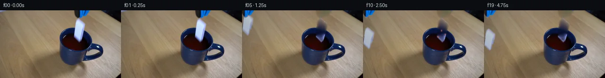

![首帧]()

Round 00
2026-11-06T02:26:09.719139+00:00像素候选变化代码 +318/−0inspection 更新
pixels 2b9041e37a0b54bd · code 74af81cecbd66a3e
查看本轮 generate.py 真实 diff
--- previous/generate.py
+++ current/generate.py
@@ -0,0 +1,318 @@
+"""PixelWorld case_0046: grabber drops a white ceramic domino into a dark-liquid mug.
+
+Local pixel operations only (numpy/scipy/PIL). Frame 00 is the untouched input.
+Pipeline:
+ 1. segment domino + two grabber jaws (color thresholds, feathered alpha)
+ 2. inpaint a clean background plate (EDT nearest fill + Laplacian diffusion)
+ 3. per frame: physics (free fall + water drag), motion-blurred domino,
+ submerged tint, meniscus/crown, elliptical ripple rings, ballistic
+ droplets, bubbles, and animated jaws
+"""
+from pathlib import Path
+import numpy as np
+from PIL import Image, ImageDraw
+from scipy.ndimage import (distance_transform_edt, gaussian_filter,
+ binary_dilation, binary_closing)
+import artifact_io
+
+HERE = Path(__file__).parent
+FRAME0 = np.array(Image.open(HERE / 'first_frame.png').convert('RGB'))
+H, W = 144, 256
+
+# ---------------------------------------------------------------- geometry
+LIQ_C = np.array([161.0, 67.0]) # liquid ellipse center (x, y)
+LIQ_RX, LIQ_RY = 29.5, 15.5
+PX, PY = 166.0, 61.0 # domino entry point on the surface
+
+YY, XX = np.mgrid[0:H, 0:W].astype(np.float32)
+ELL = ((XX - LIQ_C[0]) / LIQ_RX) ** 2 + ((YY - LIQ_C[1]) / LIQ_RY) ** 2
+LIQ_MASK = ELL < 1.0
+# distance (px) to ellipse boundary for edge fade
+edge_dist = (1.0 - ELL) * min(LIQ_RX, LIQ_RY)
+edge_fade = np.clip(edge_dist / 4.0, 0, 1)
+
+# ---------------------------------------------------------------- masks
+r, g, b = FRAME0[..., 0].astype(np.int32), FRAME0[..., 1].astype(np.int32), FRAME0[..., 2].astype(np.int32)
+mx = np.maximum(np.maximum(r, g), b)
+
+# domino core (cool white) within its known bbox
+dom_core = (r > 140) & (g > 170) & (b > 210) & (b - r > 25)
+bbox = np.zeros((H, W), bool)
+bbox[17:65, 156:181] = True
+dom_core &= bbox
+dom_core = binary_closing(dom_core, iterations=1)
+dom_erase = binary_dilation(dom_core, iterations=2) # soft halo / shadow
+
+# grabber jaws (top strip only)
+jaw_strip = np.zeros((H, W), bool); jaw_strip[0:18, 153:194] = True
+blue = (b > 120) & (b - r > 50)
+dark = (mx < 96)
+jaws = (blue | dark) & jaw_strip
+jaws = binary_closing(jaws, iterations=1)
+jaw_erase = binary_dilation(jaws, iterations=1)
+
+ERASE = dom_erase | jaw_erase
+
+# ----------------------------------------------------- background plate
+def inpaint(img, mask, iters=140):
+ out = img.copy()
+ _, idx = distance_transform_edt(mask, return_indices=True)
+ out[mask] = img[idx[0][mask], idx[1][mask]]
+ for _ in range(iters):
+ blur = gaussian_filter(out, (0.8, 0.8, 0))
+ out[mask] = blur[mask]
+ return out
+
+PLATE = inpaint(FRAME0, ERASE)
+
+# faint wood grain repair in the (fully surrounded-from-below) jaw hole:
+# blend a little low-amplitude wood noise sampled far from objects
+wood_noise_src = FRAME0[2:16, 92:132].astype(np.float32)
+wood_noise_src -= gaussian_filter(wood_noise_src, (2.0, 2.0, 0))
+jaw_only = jaw_erase & (YY < 17)
+noise_tile = np.tile(wood_noise_src,
+ (H // wood_noise_src.shape[0] + 2,
+ W // wood_noise_src.shape[1] + 2, 1))[:H, :W]
+for c in range(3):
+ PLATE[..., c] = np.where(jaw_only,
+ np.clip(PLATE[..., c] + noise_tile[..., c] * 0.5, 0, 255),
+ PLATE[..., c])
+PLATE = PLATE.astype(np.uint8)
+
+# ---------------------------------------------------------------- sprites
+def feathered_alpha(core, dil=1, sigma=0.7):
+ m = binary_dilation(core, iterations=dil).astype(np.float32)
+ a = gaussian_filter(m, sigma)
+ a[~binary_dilation(core, iterations=dil + 1)] = 0
+ return np.clip(a, 0, 1)
… diff truncated; 231 more lines …